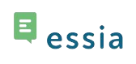
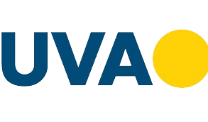

.png)


| Página inicial | Currículo | Projetos | Novidades | Contatos |
Um pouco sobre mim
Sou um estudante de Ciência da Computação em busca de oportunidades para ingressar na área e desenvolver minhas habilidades em programação. Sou um profissional comprometido e apaixonado por tecnologia e mal posso esperar para contribuir com meus conhecimentos e habilidades para o sucesso de sua empresa.
Meu objetivo é me desenvolver e aprimorar minhas habilidades em linguagens de programação, como C, C++, Java e Python. Tenho dedicado meu tempo diariamente para estudar e praticar novos conceitos e ferramentas, a fim de me tornar um profissional ainda mais qualificado e preparado para enfrentar os desafios do mercado.
Estou confiante em meu futuro na área de tecnologia e acredito que as oportunidades estão por vir. Estou ansioso para fazer parte de um grupo que valorize a inovação, o trabalho em equipe e o crescimento profissional.
Experiências
Estágiario T.I (Gestão de acessos)
Atualmente trabalho na empresa BrasilCenter desde set 2023. Solucionamos demandas em células de ouvidoria, Anatel, Nextel e sendo nossa principal a Claro, atendimento técnico e backoffice, entre outros serviços na área de servicedesk
Estágiario T.I (Produção de conteúdo)
Trabalhei na empresa Essia durante 5 meses de mai de 2022 - set de 2022. As atividades incluem a criação de projetos de sequências didáticas em XML, auxílio na arquitetura de código para o desenvolvimento de estruturas de conteúdo didático e outras atividades na área. Também é necessário converter conteúdo de formatos .PDF, HTML e InDesign para XML. São utilizadas ferramentas da Google e Adobe, além do software comercial JIRA.
Formação acadêmica
Universidade Veiga de Almeida (UVA)
Atualmente cursando na Universidade Veiga de Almeida (UVA) em Ciência da Computação desde ago de 2021, adquiri habilidades fundamentais, como programação, redes e segurança cibernética, desenvolvimento de software e inteligência artificial. Também participei de projetos práticos e estágios para aplicar meu conhecimento na vida real. Essa jornada me preparou para uma carreira empolgante em tecnologia da informação.
Firjan Sesi/Senai
Realizei o Ensino Médio e o curso técnico simultaneamente na escola Firjan Sesi/Senai, localizada no campus Maracanã no curso técnico de Tecnologoa da Informção de fev de 2018 - nov de 2020. Essa experiência foi muito enriquecedora, pois exigiu o desenvolvimento de várias habilidades interpessoais para se adaptar à rotina intensa de estudos. Durante o período, a minha gestão de tempo e estudos foram muito aprimoradas, o que contribuiu para o meu sucesso acadêmico. Além disso, tive a oportunidade de trabalhar em equipe, o que melhorou minha interação interpessoal, oratória, criatividade e pensamento crítico. Competências desenvolvidas: Organização nos estudos, trabalho em equipe, gestão de tempo e comunicação. Programação básica nas linguagens C++ , Java Script Modelagem de banco e documentação técnica. Utilização dos Software Eclipse , My SQL
Cursos: